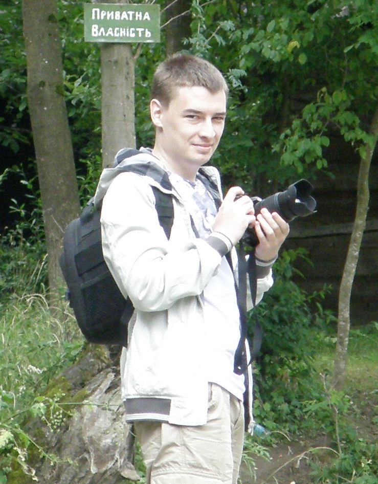

mob.tел. (093) 455-36-06, e-mail:andykhmara@gmail.com

Ініціативність, відповідальність, схильність до аналітичної діяльності,
вміння зосереджуватись на головному, надійність, порядність,
стремління розвиватись та вміння швидко вчитись,
неконфліктність, вміння працювати в команді
| 1 березня 2009 по 1 січня 2012 | ЗАО ПСО "УПГС" | Робота в умовах крайньої півночі, адміністратор мереж |
| 1 жовтня 2011 по 1 жовтня 2013 | Комп'ютерна академія ШАГ | Навчання за спеціальністю "Мережеві технології та системне адміністрування" |
| 1 листопада 2013 по 12 грудня 2014 | ПАТ "Рівнеобленерго" | Адніністратор систем |
| 12 грудня 2014 по нинішний час | ПАТ "Рівнеобленерго" | Начальник відділу підтримки та розробки програмного забезпечення |
Хмара Андрій Володимирович. Народився 2 грудня 1985 року в Україні м.Рівне де нині і проживаю. Навчався у школі № 21 до 8го класу, з 9 перейшов у "Рівненський міський ліцей" фізико математичного напрямку. Після закінченні ліцея вступив до НУВГП за спеціальністю ГІС. З 2008 року отримав водійське посвідчення категорії В. Після закінчення університету поїхав на роботу у Россію, працював за полярним кругом по обидві сторони півничного Уралу. Через 3 роки повернувся і продовжив навчання у компьютерній академії "ШАГ". Після закінчення навчання і отримання міжнародного сертифікату Cisco CCNA, почав працювати у ПАТ "Рівнеобленерго" де нині і працюю.